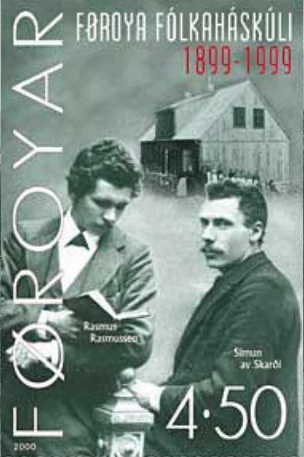
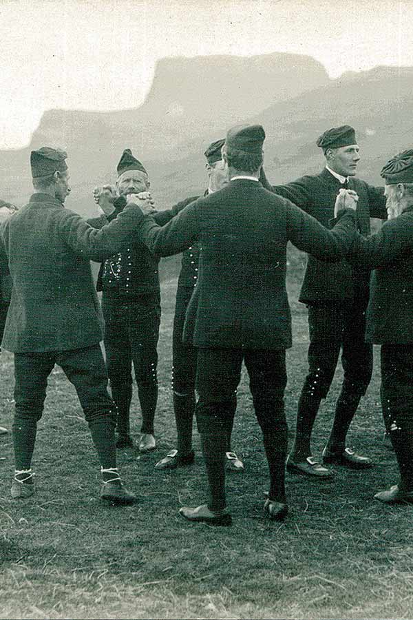
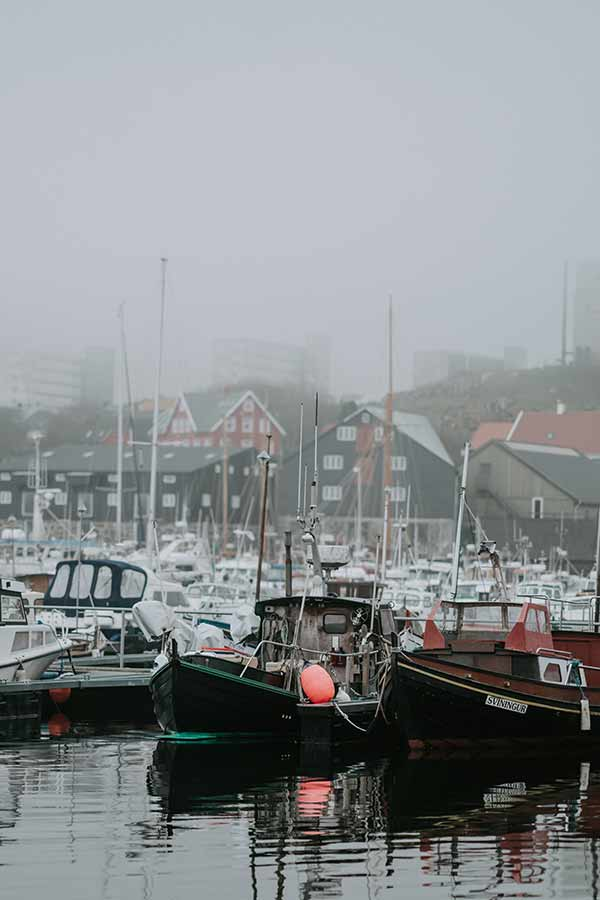
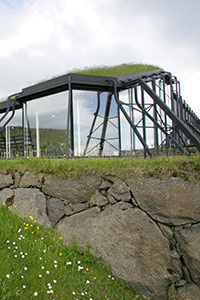
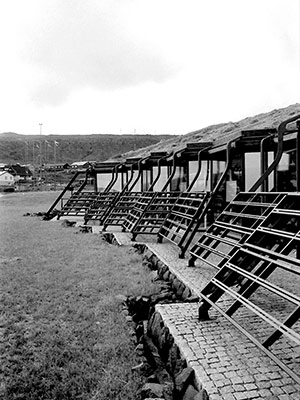
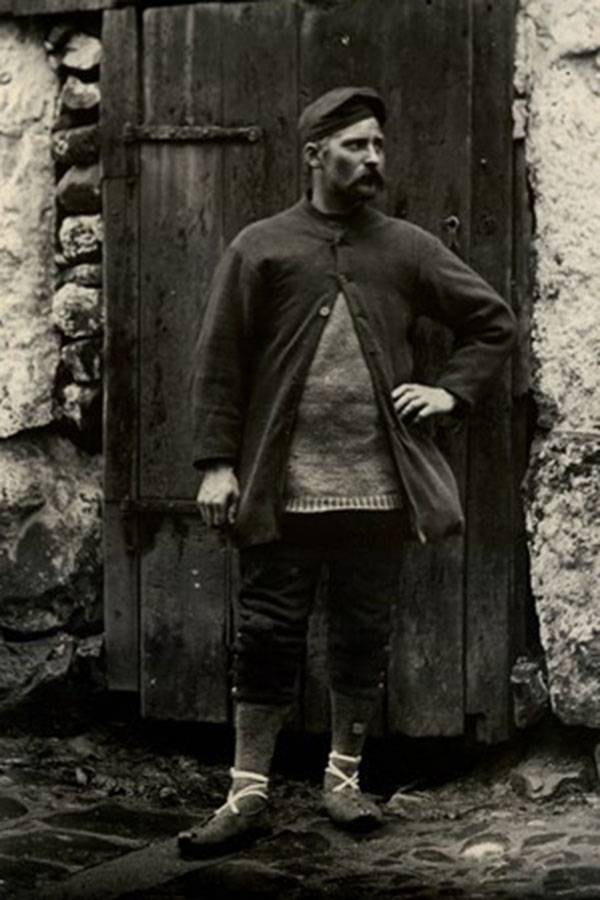
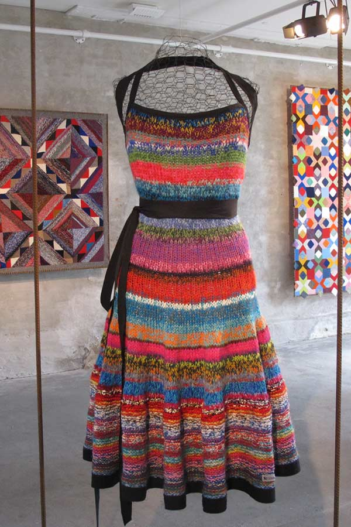
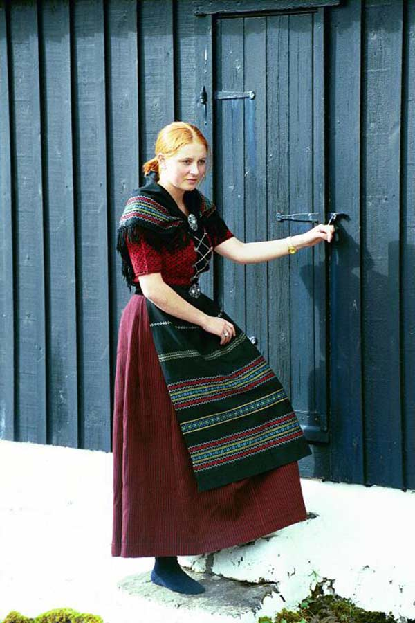

Culture
The culture of the Faroe Islands has its roots in the Nordic culture.
The Faroe Islands were long isolated from the main cultural phases and
movements that swept across parts of Europe. This means that they have
maintained a great part of their traditional culture.
The language spoken is Faroese, which is one of three insular North Germanic
languages descended from the Old Norse language spoken in Scandinavia in the
Viking Age, the others being Icelandic and the extinct Norn, which is thought
to have been mutually intelligible with Faroese. Until the 15th century,
Faroese had a similar orthography to Icelandic and Norwegian, but after the
Reformation in 1538, the ruling Norwegians outlawed its use in schools,
churches and official documents. Although a rich spoken tradition survived,
for 300 years the language was not written down. This means that all poems
and stories were handed down orally. These works were split into the following
divisions: sagnir (historical), ævintýr (stories) and kvæði (ballads), often
set to music and the medieval chain dance. These were eventually written down
in the 19th century.



FAROESE LITERATURE
Faroese written literature has only really developed in the past 100–200 years.
This is mainly because of the islands' isolation, and also because the Faroese
language was not written down in a standardised format until 1890. The Danish language
was also encouraged at the expense of Faroese. Nevertheless, the Faroes have produced
several authors and poets. A rich centuries-old oral tradition of folk tales and Faroese
folk songs accompanied the Faroese chain dance. The people learned these songs and stories
by heart, and told or sang them to each other, teaching the younger generations too.
This kind of literature was gathered in the 19th century and early 20th century. The
Faroese folk songs, in Faroese called kvæði, are still in use although not so large-scale
as earlier. Some of the Faroese folk songs have been used by the Faroese Viking metal band
ýr, i.e., Ormurin Langi.
The first Faroese novel, Bábelstornið by Regin í Líð, was published in 1909; the second
novel was published 18 years later. In the period 1930 to 1940 a writer from the village
Skálavík on Sandoy island, Heðin Brú, published three novels: Lognbrá (1930), Fastatøkur
(1935) and Feðgar á ferð (English title: The old man and his sons) (1940). Feðgar á ferð
has been translated into several other languages. Martin Joensen from Sandvík wrote about
life on Faroese fishing vessels; he published the novels Fiskimenn (1946) and Tað lýsir
á landi (1952).
In the 21st century, some new writers had success in the Faroe Islands and abroad. Bárður Oskarsson
(born 1972) is a children's book writer and illustrator; his books won prizes in the Faroes, Germany
and the West Nordic Council's Children and Youth Literature Prize (2006). Though not born in the Faroe
Islands, Matthew Landrum an American poet and editor for the Structo magazine, has written a collection
of poems about the Islands. Sissal Kampmann (born 1974) won the Danish literary prize Klaus Rifbjerg's
Debutant Prize (2012), and Rakel Helmsdal has won Faroese and Icelandic awards; she has been nominated
for the West Nordic Council's Children and Youth Literature Prize and the Children and Youth Literature
Prize of the Nordic Council (representing Iceland, wrote the book together with and Icelandic and a
Swedish writer/illustrator). Marjun Syderbø Kjelnæs (born 1974) had success with her first novel Skriva
í sandin for teenagers; the book was awarded and nominated both in the Faroes and in other countries.
She won the Nordic Children's Book Prize (2011) for this book, White Raven Deutsche Jugendbibliothek
(2011) and nominated the West Nordic Council's Children and Youth Literature Prize and the Children
and Youth Literature Prize of the Nordic Council (2013).
MUSIC
The Faroe Islands have an active music scene, with live music being a regular part of the Islands'
life and many Faroese being proficient at a number of instruments. Multiple Danish Music Award winner
Teitur Lassen calls the Faroes home and is arguably the islands' most internationally well-known musical export.
The Islands have their own orchestra (the classical ensemble Aldubáran) and many different choirs; the
best-known of these is Havnarkórið. The best-known local Faroese composers are Sunleif Rasmussen and Kristian
Blak, who is also head of the record company Tutl. The first Faroese opera was by Sunleif Rasmussen.
It is entitled Í Óðamansgarði (The Madman's Garden) and was premiered on 12 October 2006 at the Nordic House.
The opera is based on a short story by the writer William Heinesen.
Young Faroese musicians who have gained
much popularity recently are Eivør Pálsdóttir, Anna Katrin Egilstrøð, Lena (Lena Andersen), Høgni Reistrup,
Høgni Lisberg, HEIÐRIK (Heiðrik á Heygum), Guðrið Hansdóttir and Brandur Enni.
Well-known bands include Týr, Gestir, Hamferð, The Ghost, Boys in a Band, ORKA, 200, Grandma's Basement, SIC,
and the former band Clickhaze. The festival of contemporary and classical music, Summartónar, is held each summer.
The G! Festival in Norðragøta in July and Summarfestivalurin in Klaksvík in August are both large, open-air music
festivals for popular music with both local and international musicians participating. Havnar Jazzfelag was established
the 21st of November 1975, and is still active. Currently Havnar Jazzfelag is arranging VetrarJazz amongst other
jazz-festivals in The Faroe Islands.

The Nordic House in the Faroe Islands
(Faroese: Norðurlandahúsið) is the most important cultural institution in the Faroes.
Its aim is to support and promote Scandinavian and Faroese culture, locally and in the
Nordic region. By staying true to folklore,
the architects built the Nordic House to resemble an enchanted hill of elves. The house
opened in Tórshavn in 1983. The Nordic House is run by a steering committee of eight, of whom three are Faroese
and five from other Nordic countries.

TRADITIONAL FOOD
Traditional Faroese food is mainly based on meat, seafood and potatoes and uses
few fresh vegetables. Mutton of the Faroe sheep is the basis of many meals, and one
of the most popular treats is skerpikjøt, well aged, wind-dried mutton, which is quite
chewy. The drying shed, known as a hjallur, is a standard feature in many Faroese homes,
particularly in the small towns and villages. Other traditional foods are ræst kjøt
(semi-dried mutton) and ræstur fiskur, matured fish. Another Faroese specialty is tvøst
og spik, made from pilot whale meat and blubber. (A parallel meat/fat dish made with offal
is garnatálg.) The tradition of consuming meat and blubber from pilot whales arises from
the fact that a single kill can provide many meals. Fresh fish also features strongly in the
traditional local diet, as do seabirds, such as Faroese puffins, and their eggs. Dried fish
is also commonly eaten.
There are two breweries in the Faroe Islands. The first brewery is called Föroya Bjór and
has produced beer since 1888 with exports mainly to Iceland and Denmark. The second brewery
is called Okkara Bryggjarí and was founded in 2010. A local specialty is fredrikk, a special
brew made in Nólsoy. Production of hard alcohol such as snaps is forbidden in the Faroe Islands,
hence the Faroese akvavit is produced abroad. Since the friendly British occupation, the Faroese
have been fond of British food, in particular fish and chips and British-style chocolate such as
Cadbury Dairy Milk, which is found in many of the island's shops
WHALING
There are records of drive hunts in the Faroe Islands dating from 1584. Whaling in the Faroe Islands is
regulated by Faroese authorities but not by the International Whaling Commission as there are disagreements
about the Commission's legal authority to regulate cetacean hunts. Hundreds of long-finned pilot whales
(Globicephala melaena) could be killed in a year, mainly during the summer. The hunts, called grindadráp in
Faroese, are non-commercial and are organized on a community level; anyone can participate. When a whale pod
by chance is spotted near land the participating hunters first surround the pilot whales with a wide semicircle
of boats and then slowly and quietly begin to drive the whales towards the chosen authorised bay. When a pod of
whales has been stranded the killing is begun.
Faroese animal welfare legislation, which also applies to whaling, requires that animals are killed as quickly and
with as little suffering as possible. A regulation spinal lance is used to sever the spinal cord, which also severs
the major blood supply to the brain, ensuring both loss of consciousness and death within seconds. The spinal lance
has been introduced as preferred standard equipment for killing pilot whales and has been shown to reduce killing time
to 1–2 seconds. This "grindadráp" is legal and provides food for many people in the Faroe Islands. However, a study has
found whale meat and blubber to currently be contaminated with mercury and not recommended for human consumption, as too
much may cause such adverse health effects as birth defects of the nervous system, high blood pressure, damaged immune
system, increased risk for developing Parkinson's disease, hypertension, arteriosclerosis, and Diabetes mellitus type 2:
Therefore we recommend that adults eat no more than one to two meals a month. Women who plan to become
pregnant within three months, pregnant women, and nursing women should abstain from eating pilot whale meat. Pilot whale
liver and kidneys should not be eaten at all
The sustainability of the Faroese pilot whale hunt has been discussed, but with a long-term average catch of around 800 pilot
whales on the Faroe Islands a year the hunt is not considered to have a significant impact on the pilot whale population.
There are an estimated 128,000 pilot whales in the Northeast Atlantic, and Faroese whaling is therefore considered a sustainable
catch by the Faroese government. Annual records of whale drives and strandings of pilot whales and other small cetaceans
provide over 400 years of documentation, including statistics, and represents one of the most comprehensive historical records
of wildlife utilization anywhere in the world.
SPORTS
The Faroe Islands have competed in every biennial Island Games since they were established in 1985.
The games were hosted by the islands in 1989 and Faroes won the Island Games in 2009.
Football is by far the biggest sports activity on the islands, with 7,000 registered players out of
the whole population of 52,000. Ten football teams contest the Faroe Islands Premier League, currently
ranked 51st by UEFA's League coefficient. The Faroe Islands are a full member of UEFA and the Faroe
Islands national football team competes in the UEFA European Football Championship qualifiers. The
country is also a full member of FIFA and therefore the Faroe Islands football team also competes in
the FIFA World Cup qualifiers. The country won its first ever competitive match when the team defeated
Austria 1–0 in a UEFA Euro 1992 qualifying.
The nation's biggest success in football came in 2014 after defeating Greece 1–0, a result that was
considered "the biggest shock of all time" in football thanks to a 169-place distance between the teams
in the FIFA World Rankings when the match was played. The team climbed 82 places to 105 on the FIFA ranking
after the 1–0 win against Greece. The team went on to defeat Greece again on 13 June 2015 by a score of 2–1.
On 9 July 2015 the national football team of the Faroes climbed another 28 places up on the FIFA ranking.
IHF Emerging Nations Championship has been played twice, starting in 2015, and Faroe Islands national handball
team has won both editions.
The Faroe Islands are a full member of FINA and compete under their own flag at World Championships,
European Championships and World Cup events. The Faroese swimmer Pál Joensen (born 1990) won a bronze
medal at the 2012 FINA World Swimming Championships (25 m) and four silver medals at the European
Championships (2010, 2013 and 2014), all medals won in the men's longest and second longest
distance the 1500 and 800 metre freestyle, short and long course. The Faroe Islands compete in the
Paralympics and have won 1 gold,7 silvers and 5 bronze medals since 1984 Summer Paralympics.
Two Faroese athletes have competed at the Olympics, but under the Danish flag,
since the Olympic Committee does not allow the Faroe Islands to compete under its own flag.
The two Faroese who have competed are the swimmer Pál Joensen in 2012 and the rower Katrin Olsen. She competed
at the 2008 Summer Olympics in double sculler light weight together with Juliane Rasmussen. Another
Faroese rower, who is a member of the Danish National rowing team, is Sverri Sandberg Nielsen, who
currently competes in single sculler, heavy weight, he has also competed in double sculler. He is the
current Danish record holder in the men's indoor rowing, heavy weight; he broke a nine-year-old record
in January 2015 and improved it in January 2016. He has also competed at the 2015 World Rowing
Championships making it to the semifinal; he competed at the 2015 World Rowing Championship under-23 and
made it to the final where he placed fourth.
The Faroe Islands applied to the IOC for full Faroese membership in 1984, but as of 2017 the Faroe
Islands are still not a member of the IOC. At the 2015 European Games in Baku, Azerbaijan, the Faroe
Islands were not allowed to compete under the Faroese flag; they were, however, allowed to compete
under the Ligue Européenne de Natation flag. Before this, the Faroese prime minister Kaj Leo Holm
Johannesen had a meeting with the IOC president Thomas Bach in Lausanne on 21 May 2015 to discuss
Faroese membership in the IOC.
Faroese people are very active in sports; they have domestic competitions in football, handball,
volleyball, badminton, swimming, outdoor rowing (Faroese kappróður) and indoor rowing in rowing
machines, horse riding, shooting, table tennis, judo, golf, tennis, archery, gymnastics, cycling,
triathlon, running, and other competitions in athletics.
During 2014, Faroe Islands was given the opportunity to compete in the Electronic Sports European
Championship (ESEC) in esports. 5 players, all of Faroese nationality, faced Slovenia in the first
round, eventually getting knocked out with a 0–2 score.
At the 2016 Baku Chess Olympiad, the Faroe Islands got their first chess grandmaster. Helgi Ziska
won his third GM norm, and thus won the title of chess grandmaster.
2018 Faroe Islands was given another chance to compete internationally in esports, this time
attending Northern European Minor Championship 2018. Team captain this year was Rókur Dam Norðoy.



CLOTHING
Faroese handicrafts are mainly based on materials available to local villages—mainly wool.
Garments include jumpers, scarves, and gloves. Faroese jumpers have distinct Nordic patterns;
each village has some regional variations handed down from mother to daughter.
There has recently been a strong revival of interest in Faroese knitting, with young people knitting and wearing updated
versions of old patterns emphasized by strong colours and bold patterns. This appears to be a reaction
to the loss of traditional lifestyles, and as a way to maintain and assert cultural tradition in a
rapidly-changing society. Many young people study and move abroad, and this helps them maintain cultural
links with their specific Faroese heritage.
There has also been a great interest in Faroese sweaters from the TV series The Killing, where the main
actress (Detective Inspector Sarah Lund, played by Sofie Gråbøl) wears Faroese sweaters.
Lace knitting is a traditional handicraft. The most distinctive trait of Faroese lace shawls is the
centre-back gusset shaping. Each shawl consists of two triangular side panels, a trapezoid-shaped back
gusset, an edge treatment, and usually shoulder shaping. These are worn by all generations of women,
particularly as part of the traditional Faroese costume as an overgarment.
The traditional Faroese national dress is also a local handicraft that people spend a lot of time,
money, and effort to assemble.
It is worn at weddings and traditional dancing events, and on feast days.
The cultural significance of the garment should not be underestimated, both as an expression of local
and national identity and a passing on and reinforcing of traditional skills that bind local communities
together.
A young Faroese person is normally handed down a set of children's Faroese clothes that have passed from
generation to generation. Children are confirmed at age 14, and normally start to collect the pieces to
make an adult outfit, which is considered as a rite of passage. Traditionally the aim would have been to
complete the outfit by the time a young person was ready to marry and wear the clothes at the
ceremony—though it is mainly only men who do this now.
Each piece is intricately hand-knitted, dyed, woven or embroidered to the specifications of the wearer.
For example, the man's waistcoat is put together by hand in bright blue, red or black fine wool. The
front is then intricately embroidered with colourful silk threads, often by a female relative. The motifs
are often local Faroese flowers or herbs. After this, a row of Faroese-made solid silver buttons are sewn
on the outfit.
Women wear embroidered silk, cotton or wool shawls and pinafores that can take months to weave or
embroider with local flora and fauna. They are also adorned with a handwoven black and red ankle-length
skirt, knitted black and red jumper, a velvet belt, and black 18th century style shoes with silver
buckles. The outfit is held together by a row of solid silver buttons, silver chains and locally-made
silver brooches and belt buckles, often fashioned with Viking style motifs.
Both men's and women's national dress are extremely costly and can take many years to assemble.
Women in the family often work together to assemble the outfits, including knitting the close-fitting
jumpers, weaving and embroidering, sewing and assembling the national dress.
This tradition binds together families, passes on traditional crafts, and reinforces the Faroese
culture of traditional village life in the context of a modern society.
PUBLIC HOLIDAYS
Ólavsøka is on 29 July; it commemorates the death of Saint Olaf. The celebrations are held in Tórshavn,
starting on the evening of the 28th and continuing until the 31st. 28 July is a half working day for the
members of some of the labour unions, while Ólavsøkudagur (St Olaf's Day) on 29 July is a full holiday
for most but not all union members.
The official celebration starts on the 29th, with the opening of the Faroese Parliament, a custom that
dates back 900 years. This begins with a service held in Tórshavn Cathedral; all members of
parliament as well as civil and church officials walk to the cathedral in a procession. All of the
parish ministers take turns giving the sermon. After the service, the procession returns to the
parliament for the opening ceremony.
Other celebrations are marked by different kinds of sports competitions, the rowing competition
(in Tórshavn Harbour) being the most popular, art exhibitions, pop concerts, and the famous Faroese
dance in Sjónleikarhúsið and on Vaglið outdoor singing on 29 July (continuing after midnight on 30 July).
The celebrations have many facets, and only a few are mentioned here.
Many people also mark the occasion by wearing the national Faroese dress.